Urnen Afbeelding Naam Beschrijving Prijs 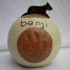 Benji Deze urn is gemaakt voor de hond, Benji. Ze is bolvormig met een diameter van ongeveer 20 cm. Er is een schijf met de po.. €.. 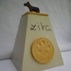 Zita Deze urne is in opdracht gemaakt voor de hond, genaamd Zita. De hoogte is ongeveer 30 cm en het grondvlak is ongeveer 15.. €.. 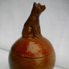 Bolletje met hond Deze kleine urne is bedoeld om een deeltje van de assen te bewaren. Het bolletje is gemaakt uit klei. Het is gebakken op.. €.. 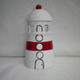 Kleine vuurtoren In deze mimi urne kan men een deel van de assen van de overledene bewaren. De vuurtoren betekent een lichtpunt in de dui.. €.. 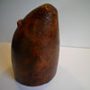 beer Dit beeld van een beer is zeer minimalistisch gemaakt. Het kan als urne gebruikt worden en wordt dan langs onder geslote.. €.. 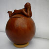 Bolletje met ventje Deze urne is bedoeld om een deel van de assen van de overledene in te bewaren. Het bolletje is gemaakt in klei en gebakk.. €.. 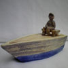 Bootje Ferna Deze keine urne heb ik gemaakt voor mijn vader. Hij hield van het water. Vandaar deze kleine boot met zijn naam in de zi.. €.. 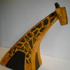 Giraf Ook dit beeld van een giraf kan men als urne gebruiken. Het beeld is ongeveer 30 cm hoog. De opening zit onderaan zodat .. €.. 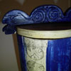 Inca urne Deze urne is geinspireerd op de maya cultuur. De tekens op de zijkant van de pot aangebracht,zijn de namen van de maya-d.. €.. 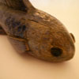 Vis lang Deze urne van een vis is bedoeld om een deel van de assen van de overledene in te bewaren. Het symboleert de vrijheid wa.. €.. 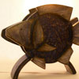 Vis rond Deze urne stelt een vis voor. Het werk is zeer gestyleerd maar behoud toch de herkenning. Men kan slechts een deel van d.. €..